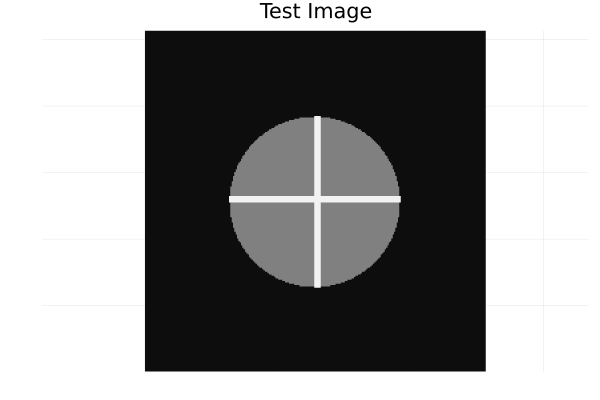
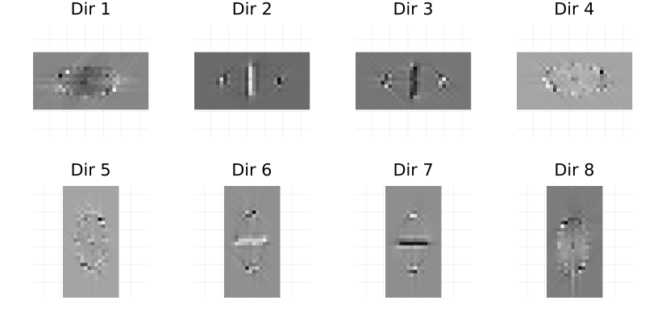
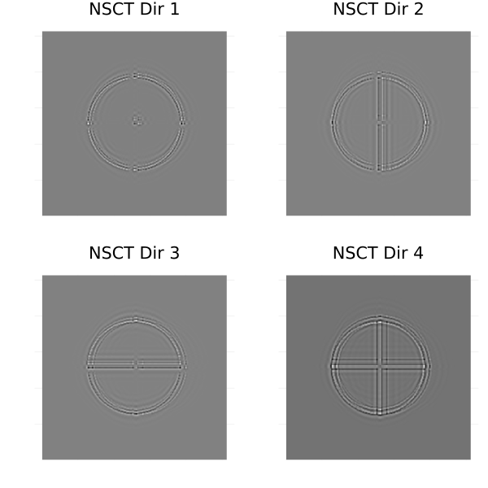
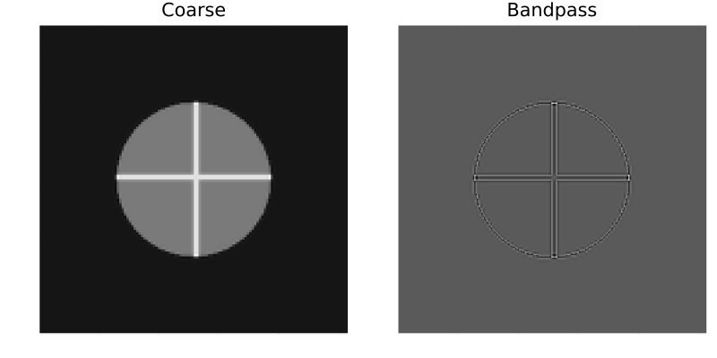

Showcase
This page showcases the main transforms provided by the Contourlets.jl package using a test image and visualizations.
Setup
First, we generate a synthetic 2D test image. For this showcase, we'll create a simple shape with directional edges.
using Contourlets
using Plots
# Create a 256x256 test image with a circular object and some lines
N = 256
img = zeros(Float64, N, N)
# Add a circle
for i in 1:N, j in 1:N
if (i - N/2)^2 + (j - N/2)^2 < (N/4)^2
img[i, j] = 1.0
end
end
# Add some lines to introduce directional high frequencies
img[64:192, 128:132] .= 2.0
img[128:132, 64:192] .= 2.0
heatmap(img, color=:grays, title="Test Image", aspect_ratio=:equal, axis=false, colorbar=false)
Contourlet Transform (CT)
We apply the Contourlet Transform with J=3 scales. At each scale, we use a different number of directional subbands.
# Define Contourlet parameters: 3 levels, with 2, 4, and 8 directional subbands respectively
# Note: L_array defines the number of subbands as 2^L, so L=[1, 2, 3] gives 2^1=2, 2^2=4, 2^3=8 subbands.
params = ContourletParams(J=3, L_array=[1, 2, 3])
# Compute the Contourlet coefficients
coeffs = ct_forward(img, params)
println("Coarse scale size: ", size(coeffs.coarse))
for (j, subbands_j) in enumerate(coeffs.subbands)
println("Scale ", j, " has ", length(subbands_j), " directional subbands.")
endCoarse scale size: (32, 32)
Scale 1 has 2 directional subbands.
Scale 2 has 4 directional subbands.
Scale 3 has 8 directional subbands.We can visualize the subbands at the finest scale (Scale 3). The Contourlet Transform efficiently isolates directional edges into different subbands.
# Extract the 8 subbands at the finest scale (j = 3)
finest_subbands = coeffs.subbands[3]
# Create a plot of all subbands at this scale
p = plot(layout=(2, 4), size=(800, 400), margin=2Plots.mm)
for (k, sb) in enumerate(finest_subbands)
heatmap!(p[k], sb, color=:grays, title="Dir $k", aspect_ratio=:equal, axis=false, colorbar=false)
end
Nonsubsampled Contourlet Transform (NSCT)
The NSCT is shift-invariant because it avoids downsampling. As a result, all subbands remain the same size as the original image.
# Use J=2 scales with L=[1, 2] (2 and 4 subbands)
nsct_params = ContourletParams(J=2, L_array=[1, 2])
nsct_coeffs = nsct_forward(img, nsct_params)
# Extract the 4 subbands at the finest scale (j = 2)
nsct_finest = nsct_coeffs.subbands[2]
p_nsct = plot(layout=(2, 2), size=(600, 600))
for (k, sb) in enumerate(nsct_finest)
heatmap!(p_nsct[k], sb, color=:grays, title="NSCT Dir $k", aspect_ratio=:equal, axis=false, colorbar=false)
end
Laplacian Pyramid (LP)
The Laplacian Pyramid decomposes the image into a coarse representation and a bandpass representation.
# Single-level LP decomposition using CDF 9/7 filters
coarse, bandpass = lp_decompose(img, CDF97)
p_lp = plot(layout=(1, 2), size=(800, 400))
heatmap!(p_lp[1], coarse, color=:grays, title="Coarse", aspect_ratio=:equal, axis=false, colorbar=false)
heatmap!(p_lp[2], bandpass, color=:grays, title="Bandpass", aspect_ratio=:equal, axis=false, colorbar=false)
Reconstruction
All transforms have a corresponding inverse function that achieves exact reconstruction (in the absence of numerical roundoff).
img_recon = ct_inverse(coeffs)
# Calculate reconstruction error
err = maximum(abs.(img_recon .- img))
println("Maximum reconstruction error: ", err)Maximum reconstruction error: 1.7763568394002505e-15